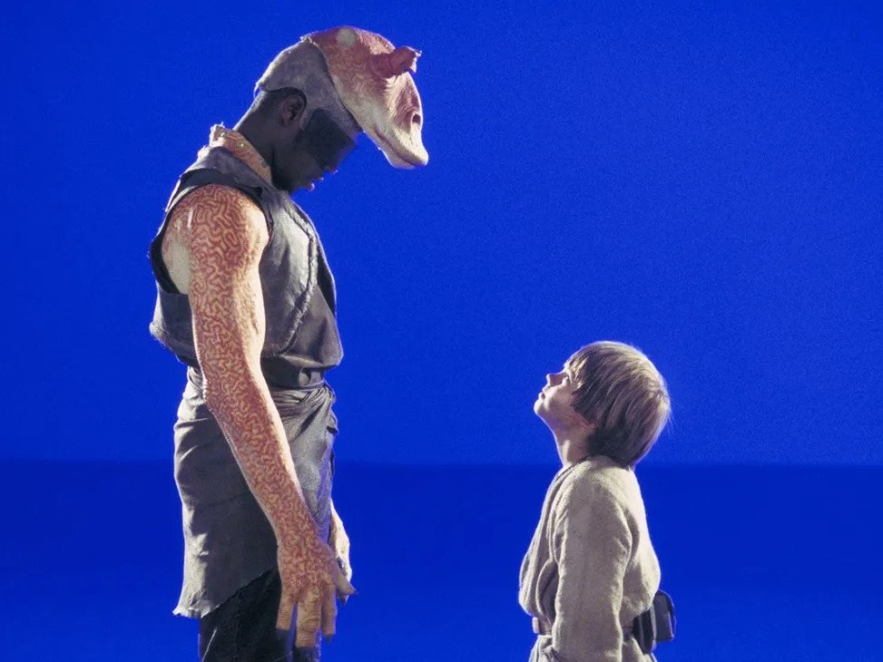

Introduction
When creating the Star Wars prequel trilogy, ILM shifted away from physical modeling and practical effects to digital effects. From the characters themselves to the cities and environments, everything was created using CGI. The transition to digital film production and advanced CGI allowed George Lucas to expand the world of Star Wars and tell stories he was incapable of telling back in the 70s and 80s.
The First CGI Character
CGI inundated the prequel trilogy, but one of its more prominent uses was to create the character Jar Jar Binks. The actor, Ahmed Best, provided the template for the movements of the character using early motion capture technology. Then, the visual representation of Binks was made digitally, creating the very first major CGI character in a film. While this CGI has been criticized by some fans, it must be taken into consideration that this was an important steppingstone in CGI technology, contributing to the realistic CGI we have now in cinema (Englehardt, 2022).
Digital Cameras
Star Wars: Episode II – Attack of the Clones was the first major film to be shot entirely on digital cameras. Lucas shot a few of the scenes from Episode I on HD video, but Episode II was the first to incorporate it into the entire filming process. Lucasfilm and ILM worked with Sony and Panavision to develop the first ever digital movie camera. Video, shot on the digital cameras had similar but slightly worse resolution than typical 35mm film, but it allowed for immediate review of the footage and editing, speeding up the production. With digital video being displayed for the crew on HD monitors, it was easier to see small details in the image and make changes (Jensen, 2022).
Developing Film
Traditional film requires multiple passes and a photochemical process to create the final product. The film starts as a negative, which is used to create an interpositive, and finally, an internegative. The catch is that the picture quality gets worse with every pass. With digital video, ILM was able to skip the photochemical process and print the final version from one prime negative, eliminating the degradation of the film quality that usually would take place. For every reel shot for Episode II, they printed seven negative copies, taking two months to complete, with each reel taking 45 hours to finish.
Overcoming Challenges
Between the release of Episode I and II, ILM had a year and a half to acquire the new camera and lenses being developed by Sony and Panavision. In addition, the teams at Lucasfilm were working rapidly to set up the necessary equipment and software systems. To aid them in the process of switching to digital cameras, Fred Meyers, the chief engineer at ILM, joined the team to help sort out issues with production and was a key factor in their success. The cameras arrived a week before the scheduled shooting date for Episode II, causing the team a lot of stress. Early testing during that week resulted in malfunctions and frantic troubleshooting for ILM, but they persevered through the last-minute issues and were able to shoot on time. On top of that, they didn't have any film cameras reserved as backups in case the digital system didn't work. George Lucas, Lucasfilm, and ILM took a leap of faith with this new technology, and they landed successfully, revolutionizing the way stories are told, forever (Seastrom, 2022).